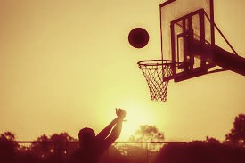

Basketball can help you physically by staying in shape and can get you physically active. Basketball can also help you mentaly as you are more alert when playing the game and you pay attention to detail as in when you need to
pass and score.
Basketball also gets you social as you have to communicate with teammates and make you more social.

Basketball
Is a team sport in which two teams, most commonly of five players each, opposing one another on a rectangular court, compete with the primary objective of shooting a basketball through the defender's hoop. While preventing the
opposing team from shooting through their own hoop.
A field goal is worth two points, unless made from behind the three-point line, when it is worth three.